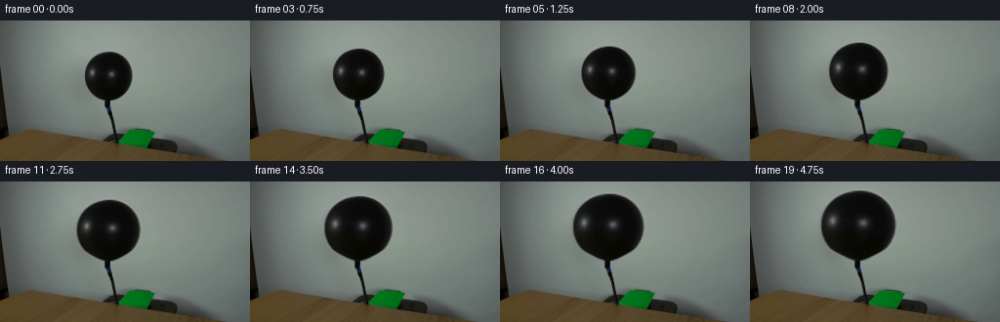
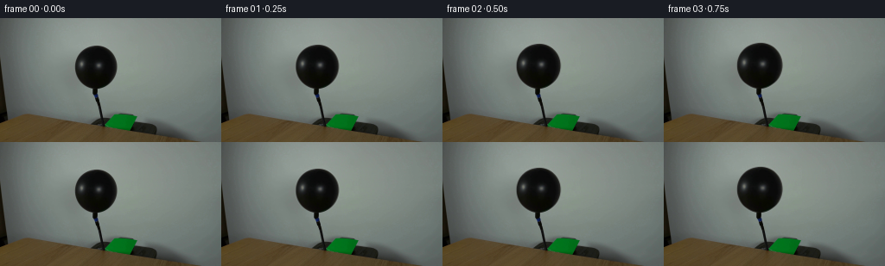

CODING AGENTS AS PIXEL WORLD MODELS
traex/GPT-5.6-Sol · 0039
点击播放 · 原生 RGB 像素
逐轮保存的候选
回放视频、检查图与代码变化。
每份候选均可单独播放。实际图片检查记录在下方工具轨迹中。
候选 01播放与检查图
点击播放 · 原生 RGB 像素


展开代码变化
--- 上一保存版本
+++ 本次保存版本
@@ -0,0 +1,113 @@
+"""Generate the requested fixed-camera balloon-inflation video.
+
+The source balloon is isolated from the first frame and elastically enlarged around
+its tied/connected neck. All pixels outside the balloon stay exactly locked to the
+source photograph, preserving the table, hose, lighting, and camera framing.
+"""
+from pathlib import Path
+
+import cv2
+import numpy as np
+from PIL import Image
+
+import artifact_io
+
+
+HERE = Path(__file__).resolve().parent
+W, H = 256, 144
+N_FRAMES = 20
+
+
+def smoothstep(x):
+ x = np.clip(x, 0.0, 1.0)
+ return x * x * (3.0 - 2.0 * x)
+
+
+def balloon_matte(rgb):
+ """Recover the contiguous black balloon body from the known center region."""
+ gray = cv2.cvtColor(rgb, cv2.COLOR_RGB2GRAY)
+ candidate = np.zeros((H, W), np.uint8)
+ # This box contains the balloon and excludes the dark hose/table below it.
+ candidate[24:86, 76:148] = (gray[24:86, 76:148] < 110).astype(np.uint8)
+ candidate = cv2.morphologyEx(
+ candidate, cv2.MORPH_CLOSE, np.ones((3, 3), np.uint8), iterations=1
+ )
+
+ count, labels, stats, _ = cv2.connectedComponentsWithStats(candidate, 8)
+ seed_ids = np.unique(labels[45:68, 102:122])
+ seed_ids = seed_ids[seed_ids != 0]
+ if not len(seed_ids):
+ raise RuntimeError("Could not locate the source balloon")
+ component_id = max(seed_ids, key=lambda i: stats[i, cv2.CC_STAT_AREA])
+ component = (labels == component_id).astype(np.uint8)
+
+ contours, _ = cv2.findContours(component, cv2.RETR_EXTERNAL, cv2.CHAIN_APPROX_SIMPLE)
+ contour = max(contours, key=cv2.contourArea)
+ solid = np.zeros((H, W), np.uint8)
+ cv2.drawContours(solid, [contour], -1, 255, cv2.FILLED)
+
+ # Include the source antialiasing ring, then recreate a soft photographic edge.
+ solid = cv2.dilate(solid, np.ones((3, 3), np.uint8), iterations=1)
+ return cv2.GaussianBlur(solid, (0, 0), 0.62).astype(np.float32) / 255.0
+
+
+def elastic_maps(scale_x, scale_y):
+ """Inverse maps for an expansion fixed at the balloon's hose connection."""
+ yy, xx = np.mgrid[0:H, 0:W].astype(np.float32)
+ anchor_x, anchor_y = 111.0, 84.0
+
+ # Stretch vertically around the fixed neck. Horizontal inflation tapers down
+ # over the lowest 12 source pixels, so the mouth remains clamped to the hose.
+ source_y = anchor_y + (yy - anchor_y) / scale_y
+ body_weight = smoothstep((anchor_y - source_y) / 12.0)
+ local_scale_x = 1.0 + (scale_x - 1.0) * body_weight
+ source_x = anchor_x + (xx - anchor_x) / local_scale_x
+ return source_x.astype(np.float32), source_y.astype(np.float32)
+
+
+def make_frames():
+ first = np.asarray(Image.open(HERE / "first_frame.png").convert("RGB"), dtype=np.uint8)
+ if first.shape != (H, W, 3):
+ raise ValueError(f"Unexpected source dimensions: {first.shape}")
+
+ matte = balloon_matte(first)
+ source = first.astype(np.float32)
+ frames = [first.copy()]
+
+ for index in range(1, N_FRAMES):
+ # A gently accelerating start followed by steady filling feels like air from
+ # a real pump rather than a digital scale effect. Dimensions increase
+ # monotonically on every frame.
+ u = index / (N_FRAMES - 1)
+ progress = 0.16 * smoothstep(u) + 0.84 * u
+ sx = 1.0 + 0.57 * progress
+ sy = 1.0 + 0.43 * progress
+ map_x, map_y = elastic_maps(sx, sy)
+
+ warped_rgb = cv2.remap(
+ source, map_x, map_y, interpolation=cv2.INTER_CUBIC,
+ borderMode=cv2.BORDER_REPLICATE,
+ )
+ warped_alpha = cv2.remap(
+ matte, map_x, map_y, interpolation=cv2.INTER_LINEAR,
+ borderMode=cv2.BORDER_CONSTANT, borderValue=0,
+ )
+
+ # Keep the hose and the clamped mouth absolutely still. The fade is above
+ # the attachment point, where moving rubber naturally meets the fixed neck.
+ row = np.arange(H, dtype=np.float32)[:, None]
+ neck_hold = np.clip((84.5 - row) / 3.5, 0.0, 1.0)
+ alpha = np.clip(warped_alpha * neck_hold, 0.0, 1.0)[..., None]
+
+ frame = source * (1.0 - alpha) + warped_rgb * alpha
+ frames.append(np.clip(np.rint(frame), 0, 255).astype(np.uint8))
+
+ result = np.stack(frames, axis=0)
+ # Contract-critical: bypass all processing for frame zero.
+ result[0] = first
+ return result
+
+
+if __name__ == "__main__":
+ frames = make_frames()
+ artifact_io.save(frames, HERE)
可观测工具轨迹
实际执行的命令与返回图片。
命令 1exit 0
/bin/bash -lc "cat prompt.txt && printf '\\n--- GENERATION_RULES.md ---\\n' && cat GENERATION_RULES.md"
命令 2exit 0
/bin/bash -lc "find . -maxdepth 2 -type f -printf '%p\\n' | sort && printf '\\n--- tools ---\\n' && command -v ffmpeg || true && command -v python3 || true"
命令 3exit 0
/bin/bash -lc "python3 - <<'PY'
from PIL import Image
im=Image.open('first_frame.png')
print(im.mode, im.size)
print('extrema', im.getextrema())
PY"命令 4exit 0
/bin/bash -lc "python3 - <<'PY'
from PIL import Image
import numpy as np
im=np.asarray(Image.open('first_frame.png'))
h,w,_=im.shape
# coarse RGB and luminance maps
for name,a in [('lum',im.mean(2)),('r',im[:,:,0]),('g',im[:,:,1]),('b',im[:,:,2])]:
print('\\n',name)
chars=' .:-=+*#%@'
for y in range(0,h,6):
line=''
for x in range(0,w,4):
block=a[y:min(y+6,h),x:min(x+4,w)]
v=block.mean()
line += chars[min(9,int(v/256*10))]
print(line)
# detailed row samples average, min max
print('\\nrow stats')
for y in range(0,h,4): print(y, np.round(im[y].mean(0),1), im[y].min(), im[y].max())
# distinct rough kmeans cv2
import cv2
Z=im.reshape(-1,3).astype(np.float32)
crit=(cv2.TERM_CRITERIA_EPS+cv2.TERM_CRITERIA_MAX_ITER,50,.1)
_,lab,cen=cv2.kmeans(Z,10,None,crit,10,cv2.KMEANS_PP_CENTERS)
counts=np.bincount(lab[:,0])
for i in np.argsort(-counts): print('cluster',counts[i],np.round(cen[i],1))
PY"命令 5exit 0
/bin/bash -lc "python3 - <<'PY'
import cv2,numpy as np
from PIL import Image
im=np.array(Image.open('first_frame.png'))
g=cv2.cvtColor(im,cv2.COLOR_RGB2GRAY)
for th in [15,25,35,45,55,65,75,90]:
m=(g<th).astype('uint8')
n,l,st,c=cv2.connectedComponentsWithStats(m,8)
print('\\nTH',th)
for i in sorted(range(1,n),key=lambda i:-st[i,4])[:15]:
if st[i,4]>=5: print(st[i].tolist(), np.round(c[i],1).tolist())
# print dark presence map at 2x2 / threshold 50
print('\\nDARK MASK')
for y in range(0,144,3):
line=''
for x in range(0,256,2):
p=g[y:y+3,x:x+2]
frac=(p<55).mean()
line += 'â' if frac>.65 else 'â' if frac>.3 else 'â' if frac>.08 else ' '
print(f'{y:03}',line.rstrip())
PY"命令 6exit 0
/bin/bash -lc "sed -n '1,240p' artifact_io.py"
命令 7exit 0
/bin/bash -lc "python3 - <<'PY'
import cv2, numpy as np
from PIL import Image
im=np.array(Image.open('first_frame.png')); g=cv2.cvtColor(im,cv2.COLOR_RGB2GRAY)
roi=(g[20:100,70:155]<85).astype(np.uint8)
# morphology
roi=cv2.morphologyEx(roi,cv2.MORPH_CLOSE,np.ones((5,5),np.uint8),iterations=2)
num,lab,st,cen=cv2.connectedComponentsWithStats(roi)
i=1+np.argmax(st[1:,4]); m=(lab==i).astype(np.uint8)
cs,_=cv2.findContours(m,cv2.RETR_EXTERNAL,cv2.CHAIN_APPROX_SIMPLE); c=max(cs,key=cv2.contourArea)
print('stat local',st[i],cen[i], 'area',cv2.contourArea(c))
pts=c[:,0,:]+[70,20]
# extremum by row
for y in range(25,96,3):
xs=np.where(m[y-20])[0]+70
if len(xs): print(y,xs.min(),xs.max())
print('poly approx', (cv2.approxPolyDP(pts.astype(np.int32)[:,None,:],1.0,True)[:,0,:]).tolist())
PY"命令 8exit 0
/bin/bash -lc "python3 - <<'PY'
from PIL import Image
import numpy as np
im=np.array(Image.open('first_frame.png'))
chars=' .,:;irsXA253hMHGS#9B&@'
# 4 luminance per char finer, crop x80:142, y25:102, 2 pix aggregation
for y in range(26,102,2):
s=''
for x in range(78,144,2):
b=im[y:y+2,x:x+2]; v=b.mean()
s+=chars[min(len(chars)-1,int(v/161*(len(chars)-1)))]
print(f'{y:03d} {s}')
print('samples')
for y,x in [(58,111),(40,111),(55,90),(55,130),(52,100),(55,120),(75,110),(85,111),(95,111),(110,112),(120,112)]: print(y,x, im[y,x].tolist())
PY"命令 9exit 0
/bin/bash -lc "cat > .tmp/testmask.py <<'PY'
import cv2,numpy as np
from PIL import Image
im=np.array(Image.open('first_frame.png')); g=cv2.cvtColor(im,cv2.COLOR_RGB2GRAY)
raw=np.zeros((144,256),np.uint8); raw[24:85,78:145]=(g[24:85,78:145]<88).astype(np.uint8)
raw=cv2.morphologyEx(raw,cv2.MORPH_CLOSE,np.ones((3,3),np.uint8),iterations=1)
n,lab,st,cen=cv2.connectedComponentsWithStats(raw,8)
ids=np.unique(lab[50:65,105:120]); ids=ids[ids>0]; i=max(ids,key=lambda z:st[z,4]); comp=(lab==i).astype(np.uint8)
cs,_=cv2.findContours(comp,cv2.RETR_EXTERNAL,cv2.CHAIN_APPROX_SIMPLE); c=max(cs,key=cv2.contourArea)
mask=np.zeros_like(comp); cv2.drawContours(mask,[c],-1,255,-1)
print(st[i],cv2.boundingRect(c),np.count_nonzero(mask))
for sx,sy in [(1.01,1.01),(1.1,1.08),(1.65,1.48)]:
M=np.array([[sx,0,111-sx*111],[0,sy,84-sy*84]],np.float32)
wm=cv2.warpAffine(mask,M,(256,144),flags=cv2.INTER_LINEAR)
print(sx, 'uncovered',np.sum((mask>127)&(wm<127)), 'out',np.count_nonzero(wm>127), 'orig',np.count_nonzero(mask))
PY
python3 .tmp/testmask.py"命令 10exit 0
/bin/bash -lc "python3 - <<'PY'
import cv2,numpy as np
from PIL import Image
im=np.array(Image.open('first_frame.png')); g=cv2.cvtColor(im,cv2.COLOR_RGB2GRAY)
for th in [70,80,85,90,95,100,105,110]:
raw=np.zeros_like(g,np.uint8); raw[20:85,75:150]=(g[20:85,75:150]<th)
n,l,st,c=cv2.connectedComponentsWithStats(raw,8)
ids=np.unique(l[48:62,105:120]);ids=ids[ids>0];i=max(ids,key=lambda z:st[z,4])
comp=(l==i).astype(np.uint8);cs,_=cv2.findContours(comp,cv2.RETR_EXTERNAL,cv2.CHAIN_APPROX_SIMPLE);co=max(cs,key=cv2.contourArea)
hull=cv2.convexHull(co); m=np.zeros_like(g);cv2.drawContours(m,[co],-1,1,-1)
print(th,st[i].tolist(), 'contour',cv2.contourArea(co), 'fill',m.sum())
for y in [31,32,33,34,35,40,50,60,70,75,78,80,82,84]:
xs=np.where(m[y]>0)[0]
if len(xs): print(y,(xs.min(),xs.max()),end=' ')
print()
PY"命令 11exit 0
/bin/bash -lc "cat > generate.py <<'PY'
\"\"\"Generate the requested fixed-camera balloon-inflation video.
The source balloon is isolated from the first frame and elastically enlarged around
its tied/connected neck. All pixels outside the balloon stay exactly locked to the
source photograph, preserving the table, hose, lighting, and camera framing.
\"\"\"
from pathlib import Path
import cv2
import numpy as np
from PIL import Image
import artifact_io
HERE = Path(__file__).resolve().parent
W, H = 256, 144
N_FRAMES = 20
def smoothstep(x):
x = np.clip(x, 0.0, 1.0)
return x * x * (3.0 - 2.0 * x)
def balloon_matte(rgb):
\"\"\"Recover the contiguous black balloon body from the known center region.\"\"\"
gray = cv2.cvtColor(rgb, cv2.COLOR_RGB2GRAY)
candidate = np.zeros((H, W), np.uint8)
# This box contains the balloon and excludes the dark hose/table below it.
candidate[24:86, 76:148] = (gray[24:86, 76:148] < 110).astype(np.uint8)
candidate = cv2.morphologyEx(
candidate, cv2.MORPH_CLOSE, np.ones((3, 3), np.uint8), iterations=1
)
count, labels, stats, _ = cv2.connectedComponentsWithStats(candidate, 8)
seed_ids = np.unique(labels[45:68, 102:122])
seed_ids = seed_ids[seed_ids "'!= 0]
if not len(seed_ids):
raise RuntimeError("Could not locate the source balloon")
component_id = max(seed_ids, key=lambda i: stats[i, cv2.CC_STAT_AREA])
component = (labels == component_id).astype(np.uint8)
contours, _ = cv2.findContours(component, cv2.RETR_EXTERNAL, cv2.CHAIN_APPROX_SIMPLE)
contour = max(contours, key=cv2.contourArea)
solid = np.zeros((H, W), np.uint8)
cv2.drawContours(solid, [contour], -1, 255, cv2.FILLED)
# Include the source antialiasing ring, then recreate a soft photographic edge.
solid = cv2.dilate(solid, np.ones((3, 3), np.uint8), iterations=1)
return cv2.GaussianBlur(solid, (0, 0), 0.62).astype(np.float32) / 255.0
def elastic_maps(scale_x, scale_y):
"""Inverse maps for an expansion fixed at the balloon'"'s hose connection.\"\"\"
yy, xx = np.mgrid[0:H, 0:W].astype(np.float32)
anchor_x, anchor_y = 111.0, 84.0
# Stretch vertically around the fixed neck. Horizontal inflation tapers down
# over the lowest 12 source pixels, so the mouth remains clamped to the hose.
source_y = anchor_y + (yy - anchor_y) / scale_y
body_weight = smoothstep((anchor_y - source_y) / 12.0)
local_scale_x = 1.0 + (scale_x - 1.0) * body_weight
source_x = anchor_x + (xx - anchor_x) / local_scale_x
return source_x.astype(np.float32), source_y.astype(np.float32)
def make_frames():
first = np.asarray(Image.open(HERE / \"first_frame.png\").convert(\"RGB\"), dtype=np.uint8)
if first.shape "'!= (H, W, 3):
raise ValueError(f"Unexpected source dimensions: {first.shape}")
matte = balloon_matte(first)
source = first.astype(np.float32)
frames = [first.copy()]
for index in range(1, N_FRAMES):
# A gently accelerating start followed by steady filling feels like air from
# a real pump rather than a digital scale effect. Dimensions increase
# monotonically on every frame.
u = index / (N_FRAMES - 1)
progress = 0.16 * smoothstep(u) + 0.84 * u
sx = 1.0 + 0.57 * progress
sy = 1.0 + 0.43 * progress
map_x, map_y = elastic_maps(sx, sy)
warped_rgb = cv2.remap(
source, map_x, map_y, interpolation=cv2.INTER_CUBIC,
borderMode=cv2.BORDER_REPLICATE,
)
warped_alpha = cv2.remap(
matte, map_x, map_y, interpolation=cv2.INTER_LINEAR,
borderMode=cv2.BORDER_CONSTANT, borderValue=0,
)
# Keep the hose and the clamped mouth absolutely still. The fade is above
# the attachment point, where moving rubber naturally meets the fixed neck.
row = np.arange(H, dtype=np.float32)[:, None]
neck_hold = np.clip((84.5 - row) / 3.5, 0.0, 1.0)
alpha = np.clip(warped_alpha * neck_hold, 0.0, 1.0)[..., None]
frame = source * (1.0 - alpha) + warped_rgb * alpha
frames.append(np.clip(np.rint(frame), 0, 255).astype(np.uint8))
result = np.stack(frames, axis=0)
# Contract-critical: bypass all processing for frame zero.
result[0] = first
return result
if __name__ == "__main__":
frames = make_frames()
artifact_io.save(frames, HERE)
PY
python3 generate.py
python3 - <<'"'PY'
from pathlib import Path
import numpy as np
from PIL import Image
z=np.load('pixels.npz')['pixels']
first=np.asarray(Image.open('first_frame.png'))
frames=np.stack([np.asarray(Image.open(f'frames/{i:02d}.png')) for i in range(20)])
print('frames',frames.shape,frames.dtype)
print('frame00 exact',np.array_equal(frames[0],first))
print('packed tensor',z.shape,z.dtype)
for i in [0,1,2,4,8,12,16,19]:
d=np.abs(frames[i].astype(np.int16)-first.astype(np.int16))
changed=np.any(d,axis=2)
ys,xs=np.where(changed)
print(i,'changed',changed.sum(),'bbox',None if not len(xs) else (xs.min(),ys.min(),xs.max(),ys.max()),'mean-delta',round(d.mean(),3),'max',d.max())
PY"命令 12exit 0
/bin/bash -lc "python3 - <<'PY'
from PIL import Image
import numpy as np, cv2
ims=[np.asarray(Image.open(f'frames/{i:02d}.png')) for i in range(20)]
# crop silhouette maps for selected frames. Threshold works because wall is bright.
for fi in [0,4,8,12,16,19]:
im=ims[fi]; g=cv2.cvtColor(im,cv2.COLOR_RGB2GRAY)
print('\\nFRAME',fi)
for y in range(0,92,3):
s=''
for x in range(58,166,2):
b=g[y:y+3,x:x+2]
f1=(b<60).mean();f2=(b<95).mean()
s += '#' if f1>.65 else 'O' if f1>.2 else 'o' if f2>.15 else ' '
print(f'{y:03} '+s.rstrip())
# motion stats only expected region; per-adjacent changed bboxes, MAE and dark area
print('\\nMOTION')
for i,im in enumerate(ims):
g=cv2.cvtColor(im,cv2.COLOR_RGB2GRAY)
dark=np.sum(g[:90,55:170]<70)
if i:
d=np.abs(im.astype(np.int16)-ims[i-1].astype(np.int16))
ch=np.any(d,axis=2); ys,xs=np.where(ch)
print(i,'dark',dark,'changed',ch.sum(),'bbox',(xs.min(),ys.min(),xs.max(),ys.max()),'MAE',round(d.mean(),3))
else: print(i,'dark',dark)
PY"命令 13exit 0
/bin/bash -lc "python3 - <<'PY'
# Final contract and containment checks, including the packed submitted artifact.
import hashlib, numpy as np
from PIL import Image
import generate
frames=generate.make_frames()
source=np.asarray(Image.open('first_frame.png').convert('RGB'))
assert frames.shape==(20,144,256,3) and frames.dtype==np.uint8
assert np.array_equal(frames[0],source)
# Background lock: all changed pixels must remain above the hose attachment/table.
changed=np.any(frames "'!= source[None],axis=3)
assert not changed[:,84:,:].any()
# inflation dark-pixel occupancy rises monotonically in central upper scene
areas=[]
for f in frames:
lum=np.dot(f[:84,60:165],[.299,.587,.114])
areas.append(int(np.sum(lum<70)))
assert all(b>a for a,b in zip(areas,areas[1:])),areas
# decode packed tensor and compare to generated RGB
packed=np.load('"'pixels.npz')['pixels'].transpose(2,0,1)
dec=np.stack([(packed>>16)&255,(packed>>8)&255,packed&255],axis=-1).astype(np.uint8)
assert np.array_equal(dec,frames)
print('all checks passed')
print('dark balloon occupancy:',areas)
print('sha256 pixels.npz',hashlib.sha256(open('pixels.npz','rb').read()).hexdigest())
print('sha256 generate.py',hashlib.sha256(open('generate.py','rb').read()).hexdigest())
PY
ls -lh generate.py pixels.npz index.html inspection.png frames/00.png frames/19.png"保存候选 1 份；完成命令 13 次；可验证图片返回 0 张。原始 API 响应与完整日志保留在本地。